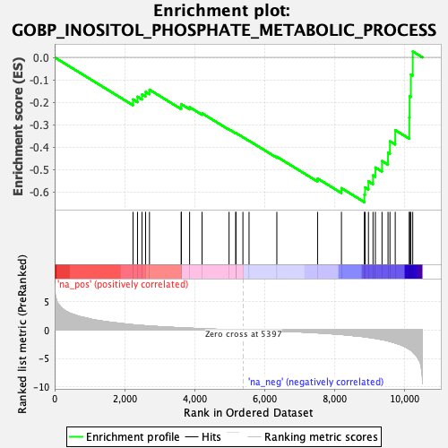
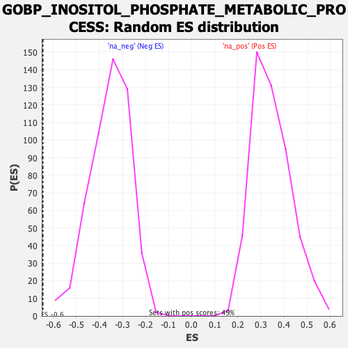

| Dataset | qlf.KOd4vsWTd4_gsea_score |
| Phenotype | NoPhenotypeAvailable |
| Upregulated in class | na_neg |
| GeneSet | GOBP_INOSITOL_PHOSPHATE_METABOLIC_PROCESS |
| Enrichment Score (ES) | -0.64562917 |
| Normalized Enrichment Score (NES) | -1.8157256 |
| Nominal p-value | 0.0 |
| FDR q-value | 0.039266724 |
| FWER p-Value | 0.899 |

| SYMBOL | RANK IN GENE LIST | RANK METRIC SCORE | RUNNING ES | CORE ENRICHMENT | |
|---|---|---|---|---|---|
| 1 | P2RY1 | 2239 | 0.930 | -0.1876 | No |
| 2 | NUDT4 | 2367 | 0.865 | -0.1756 | No |
| 3 | BPNT1 | 2495 | 0.803 | -0.1652 | No |
| 4 | NUDT3 | 2598 | 0.758 | -0.1537 | No |
| 5 | MTMR7 | 2709 | 0.712 | -0.1443 | No |
| 6 | PLEK | 3617 | 0.394 | -0.2198 | No |
| 7 | SYNJ1 | 3618 | 0.392 | -0.2089 | No |
| 8 | MINPP1 | 3856 | 0.328 | -0.2223 | No |
| 9 | IPPK | 4211 | 0.239 | -0.2494 | No |
| 10 | PPIP5K1 | 4983 | 0.073 | -0.3209 | No |
| 11 | IP6K2 | 5176 | 0.039 | -0.3381 | No |
| 12 | IMPA2 | 5177 | 0.039 | -0.3371 | No |
| 13 | IMPA1 | 5379 | 0.004 | -0.3561 | No |
| 14 | PPIP5K2 | 5554 | -0.023 | -0.3721 | No |
| 15 | ITPKC | 6348 | -0.165 | -0.4431 | No |
| 16 | MTMR2 | 7512 | -0.496 | -0.5402 | No |
| 17 | INPP4B | 8194 | -0.786 | -0.5832 | No |
| 18 | ITPK1 | 8849 | -1.199 | -0.6121 | Yes |
| 19 | INPP1 | 8869 | -1.215 | -0.5799 | Yes |
| 20 | IP6K1 | 8966 | -1.287 | -0.5530 | Yes |
| 21 | OCRL | 9096 | -1.402 | -0.5261 | Yes |
| 22 | INPP5B | 9163 | -1.471 | -0.4912 | Yes |
| 23 | INPP5E | 9353 | -1.676 | -0.4623 | Yes |
| 24 | INPP4A | 9525 | -1.910 | -0.4252 | Yes |
| 25 | PTEN | 9580 | -2.009 | -0.3741 | Yes |
| 26 | PTK2B | 9731 | -2.282 | -0.3246 | Yes |
| 27 | SYNJ2 | 10132 | -3.382 | -0.2681 | Yes |
| 28 | ITPKB | 10142 | -3.433 | -0.1729 | Yes |
| 29 | IPMK | 10177 | -3.558 | -0.0765 | Yes |
| 30 | INPP5K | 10231 | -3.859 | 0.0264 | Yes |
